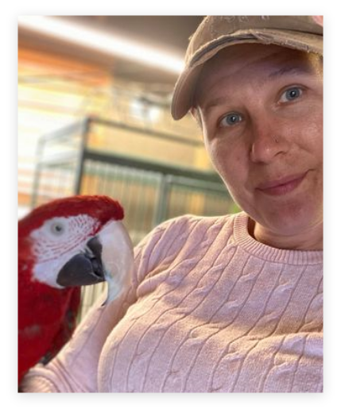

Richard Nowak
His favorite birds are albatrosses. Currently attending classes to be certified in parks and recreation.
mail@asaputah.org
Maphey
Grounds manager
Her favorite birds are puffins. Currently working on certification on ornithology.
sismaphey@yahoo.com
Tianna Loose
Secretary
Has an amazing talent in architecture. Her favorite bird is a barred rock hen.

Jennifer Minkkinen
Jens on our board helping with our social media! Her favorite birds are ravens, macaws, and cockatoos.
tiana@lossarchitects.com
Danielle Vanfleet
Is a certified Veterinary Technician and loves any bird that talks with her.
wintervanfleet@gmail.com